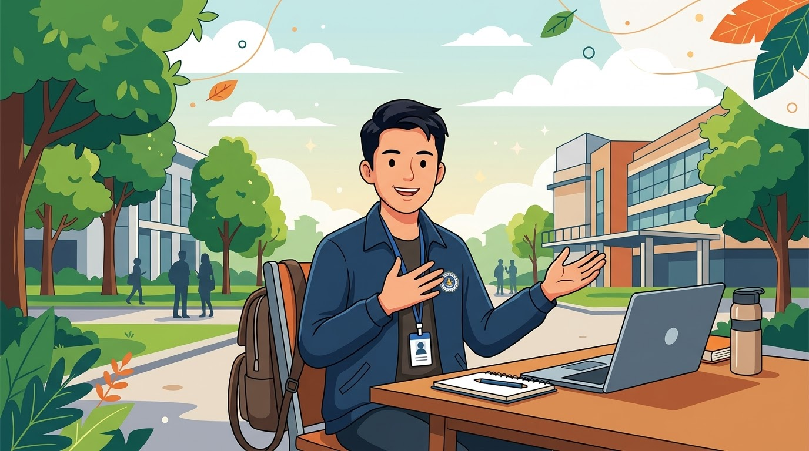
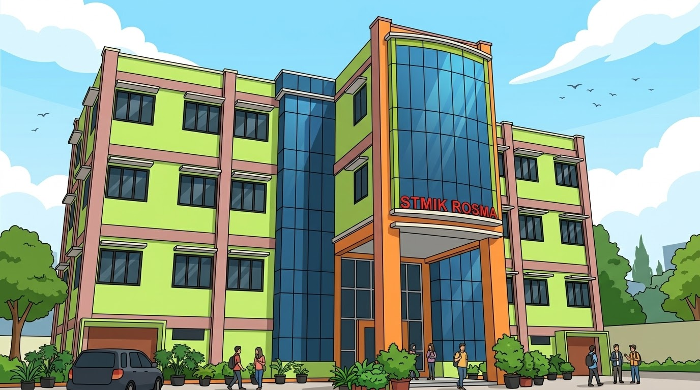
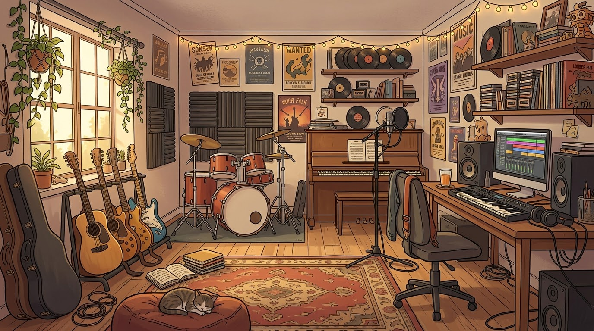
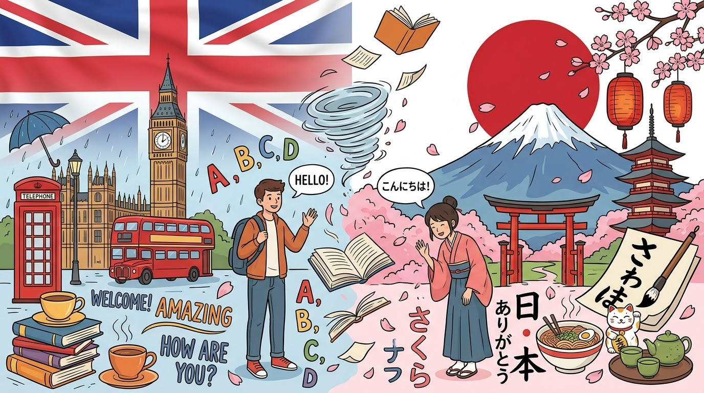

Tentang saya

Perkenalkan, nama saya Dimas. Saya berasal dari Karawang, sebuah daerah yang berada di Provinsi Jawa Barat. Saat ini, saya sedang menempuh pendidikan sebagai mahasiswa dan terus berusaha mengembangkan potensi diri melalui berbagai pengalaman dan proses pembelajaran.
Saya merupakan pribadi yang cenderung pendiam, tetapi tetap bisa beradaptasi dan bersosialisasi dengan orang lain. Saya juga menyukai hal-hal yang efisien dan memiliki rasa ingin tahu yang mendorong saya untuk mencoba sesuatu yang baru.
Dalam perjalanan hidup, saya percaya bahwa setiap pengalaman memiliki pelajaran tersendiri. Dukungan keluarga, lingkungan, dan orang-orang di sekitar menjadi bagian penting dalam proses membentuk diri saya menjadi pribadi yang lebih mandiri, terbuka terhadap perubahan, dan siap menghadapi tantangan di masa depan.
Pendidikan

Saat ini, saya sedang menempuh pendidikan tinggi di STMIK ROSMA Karawang dengan mengambil program studi Sistem Informasi. Melalui perkuliahan ini, saya mempelajari bagaimana teknologi informasi dapat dimanfaatkan untuk mendukung kebutuhan dan menyelesaikan berbagai permasalahan di dunia nyata.
Saya ingin terus mengembangkan pengetahuan dan keterampilan di bidang teknologi, khususnya dalam memahami sistem informasi, pengolahan data, serta pengembangan solusi berbasis teknologi. Saya berharap ilmu dan pengalaman yang saya dapatkan selama kuliah dapat menjadi bekal untuk menghadapi dunia kerja dan meraih tujuan saya di masa depan.
Hobi/Keahlian
Saya memiliki ketertarikan pada musik dan bahasa asing sebagai cara untuk mengekspresikan diri serta mengembangkan kemampuan dan wawasan.
🎵 Musik
🇬🇧 English
🇯🇵 日本語 N4
💻 Sistem Informasi
📷 Fotografi
Tingkat Kemampuan
Musik — Mendengarkan dan Memainkan Musik

Musik merupakan salah satu hal yang saya sukai dalam kehidupan sehari-hari. Saya senang mendengarkan berbagai jenis musik untuk menemani aktivitas, memperbaiki suasana hati, dan mencari inspirasi. Selain mendengarkan musik, saya juga menyukai kegiatan memainkan alat musik sebagai cara untuk mengekspresikan diri dan mengembangkan kreativitas. Bagi saya, musik bukan hanya hiburan, tetapi juga bagian dari kehidupan yang memberikan semangat dan kenyamanan.
Bahasa Asing — Bahasa Inggris dan Bahasa Jepang

Saya memiliki ketertarikan dalam mempelajari bahasa asing, khususnya bahasa Inggris dan bahasa Jepang. Saya terus berusaha meningkatkan kemampuan berbahasa melalui pembelajaran mandiri dan mengenal kosakata serta ungkapan baru. Untuk bahasa Jepang, saya telah mempelajari materi hingga tingkat JLPT N4. Saya berharap dapat terus mengembangkan kemampuan bahasa asing agar bisa berkomunikasi dengan lebih baik serta memahami budaya dari berbagai negara.